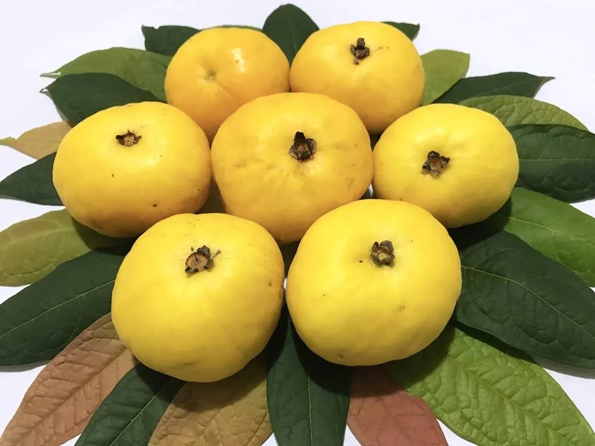
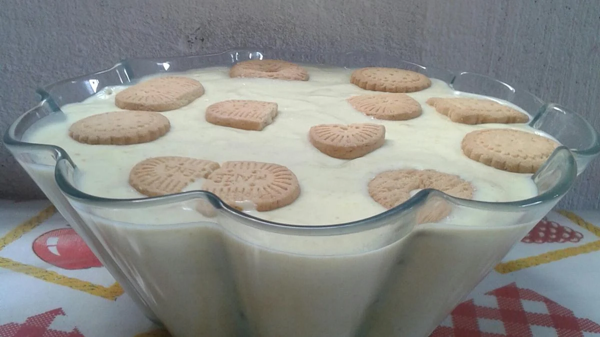

Aspectos Químicos do Araçá
O araçá é uma fruta tropical rica em vitamina C e fibras, proporcionando benefícios para a saúde digestiva e imunológica. Sua polpa é bastante aromática e pode ser utilizada em diversas preparações, como sucos, sobremesas e compotas.
Além de suas propriedades nutricionais, o araçá também é conhecido por suas propriedades antioxidantes, que ajudam a combater os radicais livres no organismo.
Receita: Sobremesa de Araçá
Ingredientes
- 2 araçás médios
- 2 cremes de leite
- 3 claras
- Folhinhas de hortelã
- 1 leite condensado
- 1 pacote de biscoito Maizena
- Leite líquido (para umedecer os biscoitos)
Modo de Preparo
- Bata o leite condensado com o creme de leite e a polpa do araçá.
- Em uma forma, coloque uma camada do creme, seguida de uma camada de biscoitos molhados no leite. Repita até acabar o creme.
- Por último, bata as claras em ponto de neve e coloque sobre o creme.
- Espalhe suavemente e decore com algumas folhinhas frescas de hortelã.
Tempo de Preparo: 40 min